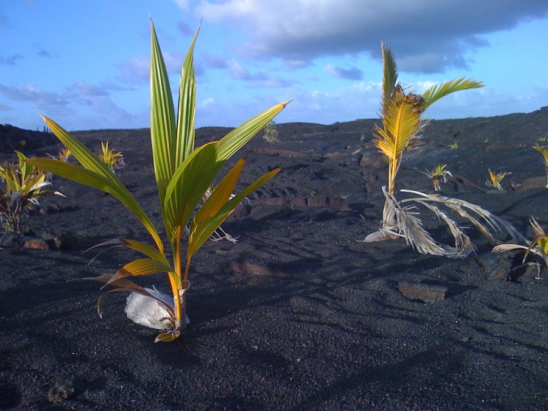

乔木 · 植物界
椰子 Cocos nucifera

热带海滨的标志性常绿乔木，单干高耸无枝，果实椰子富含汁液，是热带地区重要的经济与观赏树种。
- 分类
- 门被子植物门纲百合纲目棕榈目科棕榈科属椰子属
- 栖息环境
- 热带海岸的砂质土壤，喜高温、多雨、强光与海风环境
- 地理分布
- 原产东南亚至太平洋群岛；中国海南、广东、广西及云南南部栽培
- 保护级别
- 暂无评估；中国未列入国家重点保护野生植物名录
物种志
椰子为常绿乔木，高可达 30 m，树干单生、常略倾斜，表面留有明显的环状叶痕；羽状复叶长达 5 m，由 30 余枚小叶组成，簇生于干顶，形成伞状树冠。花为肉穗花序，生于叶腋，雌雄同序，雄花小而多、雌花大而少；果实为核果，近球形，外果皮薄、中果皮厚而呈纤维质、内果皮坚硬骨质，内有 1 粒种子与椰子水。
椰子原产东南亚至太平洋群岛，中国海南、广东、广西、云南南部有栽培，喜高温多雨、光照充足的海岸环境，耐盐、抗风，常生长于砂质海岸。椰子水可饮用，椰肉可榨油、制椰奶与椰蓉，椰壳可制工艺品与活性炭，椰棕可制绳与床垫，树干可作建筑用材。椰子在热带文化中地位独特，被称为“生命之树”，海南等地以椰风海韵著称。
形态与习性
- 株高可达 30 m，干径可达 30 cm
- 花期全年连续开花，盛花期 5–8 月
- 果期果实发育约需 12 个月
- 光照喜强光，不耐阴
- 水分喜多雨，年降水量 1500 mm 以上
- 土壤排水良好的砂质土，耐盐
- 主要用途椰肉榨油、椰水饮用、椰棕制绳与床垫
趣味知识
- 椰子从开花到果实成熟约需 12 个月，一棵椰树每年可结果 50–100 个。
- 椰子水并非椰汁，它是果实内部的液体胚乳，成熟后逐渐被椰肉吸收。
- 椰子在海上漂流数月仍能发芽，借洋流散布到遥远的海岸。
- 椰壳纤维叫椰棕，可用于制作绳索、床垫和护坡抗冲刷材料。